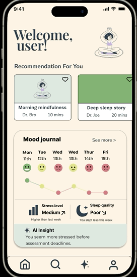
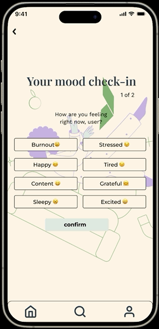

03 - User Personas
Designing for real environments in real moments
Three personas were built to keep design decisions grounded in human needs and no assumptions.


Helping users build healthier reflection habits through AI powered insights wellbeing support
UX Researcher & UI Designer
3 months
Figma & Google Docs

Prototype of Deep within: Uses AI therapist and calculates your mood throughout the app
"What would have helped me when i felt overwhelmed?"
Three key themes emerges through competitor analysis, app store reviews, and user discussion. Each theme become a design requirement.
Participants expressed interest in understanding why they felt a certain way rather than simply recording emotions. Logging without relection felt purposeless.
Users found existing wellbeing application overwhelming or difficult to interpret. Chats and graphs without context created more confusion than clarity.
Participants responded positively to the idea of receiving tailored recommended based on their emotional state - especially recommendation that stress, burnout and sleep.
Three personas were built to keep design decisions grounded in human needs and no assumptions.
Headspace, Widgetable, Calm was analysed to understand the competitive landscape. The opportunity was clear: nobody combined mood tracking, sleep data, jorunaling and contextual AI support in a single flow

"Headscape is great but I have to pay to access anything useful it feels like a paywall app, not a wellbeing app" - App store review
The project followed a design thinking process. research informed personas, personas shaped wireframes, wireframes reveaked usability issues, issues drove iteration

Every iteration was a reponse to something learned - from research, from testing, from asking "does this actually help someone who is struggling" Here is the story of those changes




After completeing the first protoype. I recruited 7 university students to test it using a think aloud protocol - users will navigate the app freely while speaking their thoughts out loud. I sat with each participant an noted exactly what they said as they moved through the screens. No leading questions. No guidance. Just their honest, unflitered reactions.
Participants
Tasks Set
Key Issues Found
Method
Task 1
Task 2
Task 3